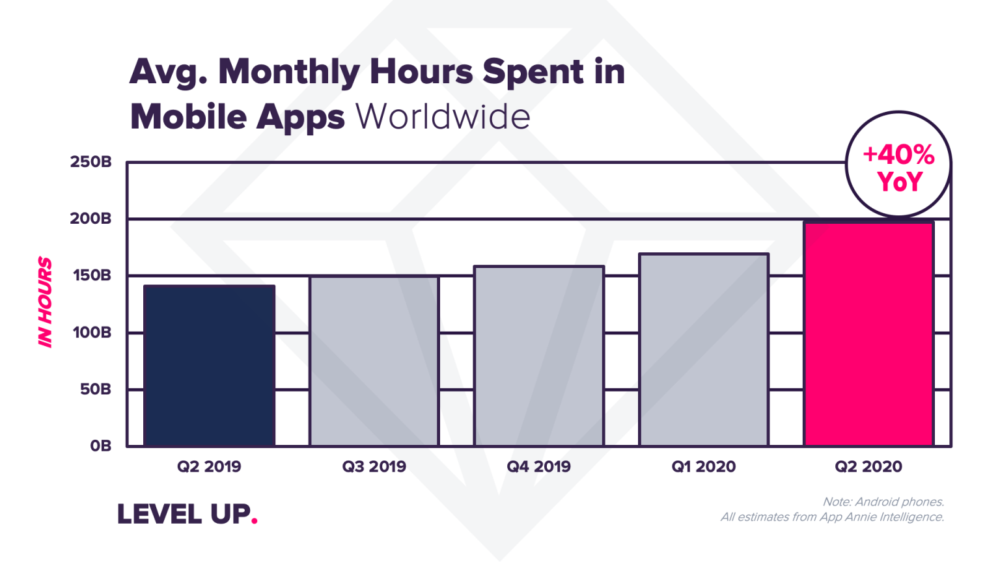
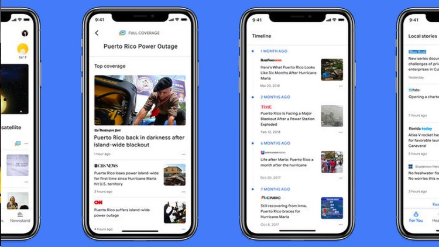

A ONDA DOS
APLICATIVOS


Nos últimos anos temos acompanhado um considerável crescimento do mercado de tecnologia da informação no Brasil, tornando o desenvolvimento de novos programas para computador e...
Veja Mais
6 aplicativos em alta na quarentena que podem facilitar a sua vida.
A quarentena aumentou a procura por aplicativos, seja para se distrair durante o tempo livre ou para aumentar a produtividade...
Veja MaisPandemia aumenta em 40% o tempo que usuários passam em smartphones, aponta App Annie.
O tempo mensal em aplicativos móveis cresceu 40% no segundo trimestre de 2020 na comparação com o mesmo período...
Veja MaisMelhores aplicativos para acompanhar notícias em 2020
Manter-se atualizado é a chave em nosso mundo acelerado. A maioria das pessoas...
Veja MaisNetflix, HBO, Amazon, Disney: Confira lançamentos dos streamings em novembro
Os fãs de filmes e séries já podem se programar para as novidades e lançamentos que surgirão ao longo deste mês de...
Veja Mais